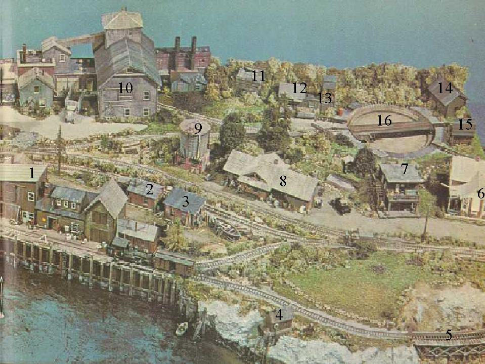

Right side Thatcher's Inlet buildings
HOME
.
The people of Elk River
.
The people of Thatcher's Inlet
.
Drop an email to ID a building or comment on the project.

- #1 Sam Cahoon's Fish House (#1 on Right side) Kitbash -
Available now in laser cut kit from Northeastern Structures
NE20109 "Sam Cahoons Fish Pier
- #2 Raymond Geary Boat shop storage shed? Unknown ? x ? inches.
- #3 Raymond Geary Boat building and repair yard on North Main Street Scratchbuilt,
Dave Frary and Bob Hayden, Railroad Model Craftsman, April 1969, Pages 42 through 43.
1 1/2 x 2 3/4 inches. As built
- #4 Horace Savege's Fishing shack Revell Chicken house
- #5 Frenchman's cove trestle bridge AHM HO scale trestle kit
Reviewed by Dave Frary in Railroad Model Craftsman July 1972 page 54.
? x ? inches.
- #6 Wallace Brown's victorian house Queen Anne house Kit # 225-3 Classic Minatures (AKA: Historic Scale Minature's) ? x ? inches.
Reviewed by Bob Hayden and Dave Frary in Railroad Model Craftsman June 1971 page 14.
- #7 Neverly Sister's Rooming House on North Main Street is a bashed version of an AHM Emporium Department Store Corner building #5879.
~2 x ~2 inches.
As built
- #8 TI RR Station Campbell Scale Models 200-367 Skull Valley Station 3 7/8 x 10 1/4 inches.
Reviewed by Bob Hayden in Railroad Model Craftsman September 1971 page 42.
- #9 Hawk's Crossing watertank AKA Wilbur's Waterstop See Model Railroad Craftsman May 1975, page 26 and 27. Revell (AHM water tower) Atlas interlocking tower, or Cross kitted MiniKits water tower #5836
Currently available from IHC
Read about Willie Pearce youngest son of Camden Pearce, started with TI at age 11, who retired after 20 years working various tasks peaking as a breakman. Retired to man Wilbur's for another 28 years.
- #10 Ellis Turner's Glue Factory and Freal's Fish Eye Fertilizer Plant kit bash by Dave Frary composed of
Model Hobbies Company House
Fine Scale Flour and Grain Mill
Vollmer Old Fasion Workshop (either Railway workshop 770-5603 4 3/8 x 2 1/4 x 2 1/4 OR Workshop 770-5612 5 1/8 x 2 3/4 x 4 3/8)
AHM Rico Station
Campbell profile shingles
Holgate - Reynolds brick sheeting
Timberline window castings
Selley cast door
- #11 place holder Unknown ? x ? inches.
- #12 TI Fuel Con-Cor (Heljan) 9003 H-O Garage, plus Con-Cor Sandhouse #9029/2 part #45, ? x ? inches.
Scribe Garage doors on both sides, then snap styrene. Reglue doors together to model closed shed. Re-enforce base of doors with styrene strip.
HINTS
- #13 TI Sand Con-Cor Sandhouse #9029/2 parts #32 through 43 and 54 through 59. ? x ? inches.
HINTS
- #14 place holder Unknown ? x ? inches.
- #15 place holder Unknown ? x ? inches.
- #16 TI turntable Rapido N scale turntable
Will be replaced by a currently available motorized turntable 6 3/32 inches in diameter
TI left side
Boats just off module
Another view Boats just off module
Frenchman's Cove - corner module
Bailey's Island and Cundy Cove - module module fodder
Ref articles by Dave and Bob
{kind=link}